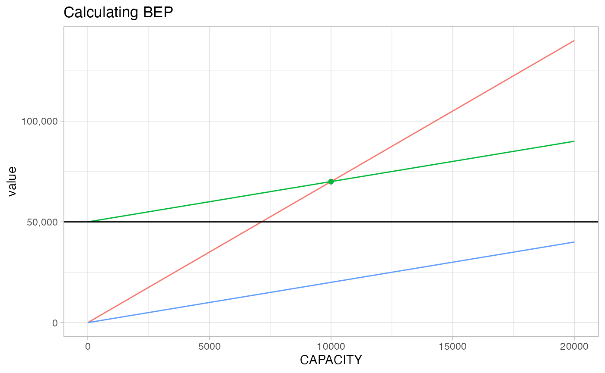
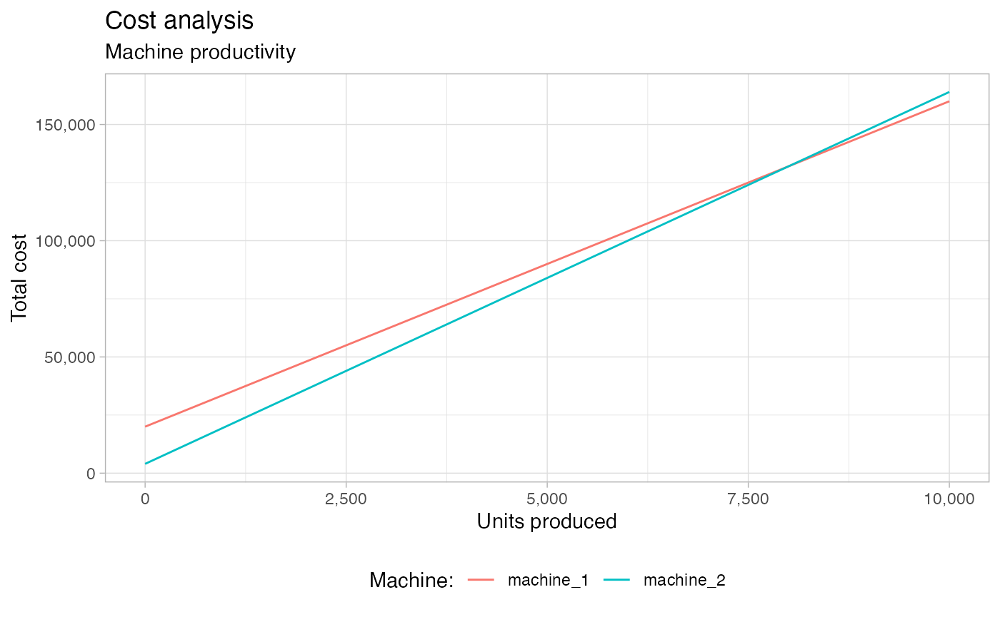

Week 2
week-2-ops-online.RmdBreak Even Analysis (bep1)
Analyzing revenue and costs
TR: Total revenue
- Income generated from normal business operations
TFC: Total fixed costs
- Fixed costs remain the same regardless of business operations (rent)
- Costs that remain the same as output levels change
TVC: Total variable costs
- Costs that change depending on business operations (raw materials)
- Costs that fluctuate as output levels change
VC: Variable cost per unit
- Contribution/ margin - variables costs to produce good or service.
- Likely inversely proportional to output ie: as output increases the variable cost per unit will likely decrease if economies of scale are achieved.
TC = Total Fixed Costs + Total Variable Costs
TRM: Total Raw Material
- Variable cost - some input for creating/ manufacturing product
TDL: Total direct labor
- Cost to manufacture a product or produce a good/ service
- People directly involved to produce a product/ service
NP: Net Profit
NP = TR - TC
Total Revenue = Volume (quantity) * Price
Total Cost = Total Fixed + Total Variable Cost
Net Profit = Total Revenue - Total Costs Total variable costs:
The cost to produce a good or service is fixed.
- Raw materials
tibble(Quantity = 1:100, Cost = seq(100, 1000, length.out = 100)) %>%
ggplot(aes(Quantity, Cost)) +
geom_line() +
scale_y_continuous(labels = scales::dollar_format()) +
labs(title = "Total Variable Cost (TVC)",
subtitle = "Fixed cost per unit")Total Variable Costs
Total fixed costs:
Costs remain the same regardless of business activities, or output.
- Rent
- Service agreements
tibble(Quantity = 1:100, Cost = 4523) %>%
ggplot(aes(Quantity, Cost)) +
geom_line() +
scale_y_continuous(labels = scales::dollar_format()) +
labs(title = "Total Fixed Costs (TFC)"
)Total Fixed Costs
Relevant range: In reality, fixed costs are really only fixed within specific bounds or thresholds.
Costs will not be absolutely fixed, but more generally can remain fixed up to a certain upper bound creating a stair step chart.
- ie: Manufacturing output has increased so significantly, we need to expand into a larger factory.
Breaking down fixed and variable costs
Has undergone changes in recent years.
Fixed costs:
- Rent
- Salaries
- Depreciation
- Useful life of long term (capitalized) assets
- Property tax
- Most expenses
Variable costs:
- Raw material
- Direct labor
- Variable factory overhead
- Function of how much has been spent on direct labor
Piece rate pay system - paid on the number of units produced.
New Philosophies
TQM: Total quality management JIT: Just in time production TOC: Theory of constrains
Fixed costs:
- Salaries
- Property tax
- Depreciation
- Rent
- Direct labor
- Most expenses
Variable costs:
- Raw material: (maybe the only variable under new regime)
Maybe there are some holes in what is fixed vs. variable
- Major difference being the definition of variable costs
- Is labor really a variable cost?
- Production worker building products with a specific time constraint.
Tenets of JIT - build only what you can sell!
Regardless of whether you produce 40 or 50 units, you are still paid the same wage.
# 40 units / hour
40 * (10 * 8)
#> [1] 3200
# Next day 50 unit/ hour
50 * (10 * 8)
#> [1] 4000
# There is a difference in the cost per unit?Next week - whether you are producing products, going through new training, or being told to stay home, you are still receiving the same wage.
Generally, payroll does not fluctuate month to month regardless of business activity/ output.
Exam: Only true variable cost according to the new philosophies is raw material. Should consider payroll/ direct labor as a fixed cost.
Major takeaway is that companies will do things in different ways as long as they fit within accounting rules.
- Managerial accounting: internal decision making
- Financial accounting: external reporting governed by financial accounting standards board (FASB)
//TODO Throughput accounting? Activity based costing?
Reviewing charts
Total cost = Variable Cost + Fixed costs
If the price does not cover the cost of production, the producer/ supplier will lose money. The more you sell the more money you will lose.
- Wheat framer (agriculture), oil & gas (lift cost/ variable cost)
tibble(
Quantity = 0:100,
TFC = 60,
TVC = Quantity * 1.6,
TC = TFC + TVC) %>%
tidyr::pivot_longer(cols = c('TFC', 'TVC', 'TC')) %>%
ggplot(aes(Quantity, value, color = name)) +
geom_line() +
labs(title = 'Total Costs',
x = 'Quantity', y = 'Cost') +
scale_y_continuous(label = scales::dollar_format()) +
geom_label(data = . %>% filter(Quantity == max(Quantity)),
aes(label = name), position = 'identity') +
theme(legend.position = 'None')Total costs
Break Even Point (BEP)
The point at which revenue will cover fixed costs and variable costs related to manufacturing a product.
Might be true within a relevant range. As we sell products past the BEP, we will begin to produce positive cash flow.
tibble(
Quantity = 0:100,
price = 4,
cost = 2.5,
TR = Quantity * price,
TFC = 90,
TVC = Quantity * cost,
TC = TFC + TVC,
BEP_q = TFC / (price - cost),
BEP_d = BEP_q * price
) %>%
tidyr::pivot_longer(cols = c('TFC', 'TVC', 'TC', 'TR')) %>%
ggplot(aes(Quantity, value, color = name)) +
geom_line() +
geom_label(
data = . %>% filter(Quantity == max(Quantity)),
aes(label = name), position = 'identity'
) +
geom_label(aes(mean(BEP_q)-15, mean(BEP_d) + 14, label = 'Break Even Point')) +
geom_segment(aes(x = 0, y = mean(BEP_d), yend = mean(BEP_d), xend = mean(BEP_q))) +
geom_segment(aes(x = mean(BEP_q), y = 0, yend = mean(BEP_d), xend = mean(BEP_q))) +
labs(title = 'Price > Variable Costs',
subtitle = 'Product or service produces positive cashflow',
x = 'Quantity', y = 'Cost') +
scale_y_continuous(label = scales::dollar_format()) +
theme(legend.position = 'None')
Price greater than variable costs
Calculating net income
# Total fixed cost
TFC = 6000
# Variable costs
VC = 5
# Price
P = 8
output = 1500
# Total revenue
TR = P * output # 12000
# Total variable cost
TVC = VC * output # 7500
# Contribution margin
C = TR - TVC # 4500
# Total fixed costs
TFC = 6000
# Net loss
NP = TR - TVC - TFC # 1500 BEP cont.
Break even point is defined as: The number of units we have to sell to cover outlays:
BEP (units) = Total Fixed Costs / (Price - Variable Cost per Unit)
Revenue generated to break even:
BEP (dollars) = BEP (units) * Price
Margin of Safety:
- The difference between total or expected sales, and the revenue that is required to break even.
Margin of Safety = Sales (Total or expected sales) - BEP (dollars)
Contribution margin is defined as:
contribution margin ratio = (total revenue - variable costs) / total revenuecontribution margin = Price per product - variable cost per product
Product markup:
- Markup percentage of a product.
markup = (selling price - cost) / cost
Break Even Analysis (bep2)
Example problems
1. The Smith Manufacturing Company produces chairs. An analysis of their
accounting data reveals:
Fixed cost $50,000 per year
Variable cost $2 per chair
Capacity 20,000 chairs per year
Selling price $7 per chair- Compute the break-even point in number of chairs.
tibble(
FC = 50000,
VC = 2,
price = 7,
CAPACITY = 1:20000,
TVC = CAPACITY * VC,
REV = CAPACITY * price,
TFC = TVC + FC) %>%
tidyr::pivot_longer(cols = c(TVC, REV, TFC)) %>%
ggplot(aes(CAPACITY, value, color = name)) +
geom_line() +
geom_hline(aes(yintercept = FC)) +
geom_point(aes(x = bep_units(VC, FC, price)[[1]], y = bep_dollars(VC, FC, price)[[1]])) +
scale_y_continuous(labels = scales::comma_format()) +
labs(title = "Calculating BEP") +
theme(legend.position = 'Bottom')
bep_units(2, 50000, 7)
#> [1] 10000
bep_dollars(2, 50000, 7)
#> [1] 70000- If sales (forecasted or actual) = 12,000, what is the margin of safety?
# Margin of Safety = Forecasted Sales - BEP Dollars
scales::dollar(
(12000 * 7) - bep_dollars(variable_cost = 2, fixed_cost = 50000, price = 7)
)
#> [1] "$14,000"
scales::comma(
(12000) - bep_units(variable_cost = 2, fixed_cost = 50000, price = 7)
)
#> [1] "2,000"c.Find the number of chairs Smith must sell to show a profit of $30,000.
- Add the desired profit to the fixed cost
# Number of units it takes to make 30,000 in profit
bep_units(variable_cost = 2, fixed_cost = 50000 + 30000, price = 7)
#> [1] 16000- What is the fixed cost per chair at 75 percent of capacity?
As output increases, fixed cost per unit will decrease as costs are spread over a larger output.
capacity <- 20000
fixed_cost <- 50000
# Fixed cost per chair
fixed_cost / (capacity * .75)
#> [1] 3.333333Is the variable cost per unit constant? True Total variable cost will increase as output increases.
Fixed costs per unit are inversely related to output. Fixed cost per unit will fall as output increase.
2. The Taylor Feed Company produces feeds for chickens, hogs, cattle, and dogs.
From available records we know the following:
Selling price Percent of $ sales
Feed for per ton VC per ton volume
- Chickens $30 $15 40%
- Hogs $40 $15 20%
- Cattle $36 $16 25%
- Dogs $32 $12 15%
Annual fixed costs: $80,000a . Find the total contribution per overall sales dollar with the present product mix.
The current product mix offers a contribution margin % of 0.558. For every dollar sold, 0.56 is retained as gross profit.
problem2 <- tribble(
~price, ~cost, ~volume,
30, 15, .40,
40, 15, .20,
36, 16, .25,
32, 12, .15
) %>%
mutate(
margin = (price - cost) / price,
weighted_cm = margin * volume
)
problem2 %>%
summarise(cm_mix = sum(weighted_cm))
#> # A tibble: 1 x 1
#> cm_mix
#> <dbl>
#> 1 0.558- Find the break even in dollars
# BEP Units = FC / (Price - VC )
# BEP Dollars = BEP Units * Price
p2_bep <- problem2 %>%
summarise(cm = round(sum(weighted_cm), 2)) %>%
transmute(BEP_dollars = 80000 / cm)
scales::dollar(p2_bep$BEP_dollars)
#> [1] "$142,857"- Find the margin of safety in $’s if $ Sales = $175,000
scales::dollar(175000 - p2_bep$BEP_dollars)
#> [1] "$32,142.86"3. The Holmes Shoe Store currently stocks three lines of ladies'
shoes. Holmes is considering dropping one line of shoes and
adding two more. From the data given, decide whether or not
Holmes should make this change. Give your reasons.
Fixed costs: $30,000
SHOES NOW STOCKED:
Type Selling Price VC per pair Sales this year
- Flats 10 6 30,000
- Golf 16 12 10,000
- Dress 20 12 60,000
SHOES STOCKED IF PROPOSAL IS ACCEPTED:
Type Selling Price VC per pair Expected sales
- Flats 10 6 25,000
- Dress 20 12 60,000
- Evening 16 8 10,000
- Bedroom 6 3 5,000
Total $100,000
current <- tribble(
~price, ~vc, ~sales,
10, 6, 30000,
16, 12, 10000,
20, 12, 60000) %>%
mutate(total = sum(sales),
weight = sales / total)
proposal <- tribble(
~price, ~vc, ~sales,
10, 6, 25000,
20, 12, 60000,
16, 8, 10000,
6, 3, 5000) %>%
mutate(total = sum(sales),
weight = sales / total)The proposal offers a better product mix that will return a higher contribution margin.
# Calculating the average contribution margin for the product mix
current %>%
mutate(cm = (price - vc) / price,
weighted_cm = weight * cm) %>%
summarise(average_cm = sum(weighted_cm))
#> # A tibble: 1 x 1
#> average_cm
#> <dbl>
#> 1 0.385
proposal %>%
mutate(cm = (price - vc) / price,
weighted_cm = weight * cm) %>%
summarise(average_cm = sum(weighted_cm))
#> # A tibble: 1 x 1
#> average_cm
#> <dbl>
#> 1 0.4154. The Monopoly Supply Company is the sole supplier
of a patented line of widgets. Because their line of
widgets is sold to customers who require them as
replacement devices in expensive machinery, Monopoly
Supply experiences an inelastic demand pattern in sales
(each year they sell exactly 100,000 widgets regardless
of price). Recently, however, Monopoly Supply has been
threatened by anti trust actions and has learned, by the
grapevine, that they will be slapped with a lawsuit if
their profit on widgets next year exceeds 10 percent of
their fixed investment in widget production; this
investment is $5 million and is depreciated at $500,000
per year. If variable costs are $10 to make a widget, what
price should they ask next year in order to realize as
much profit as possible but still avoid antitrust litigation?Perfectly inelastic meaning that the price of the product will not effect the quantity demanded (vertical line).
An increase in price will not increase or decrease the number of products sold.
TFC=500000
# per widget
VC=10
QTY=100000
INVESTMENT=5000000
MAXIMUM_PROFIT = TFC * .10 5. A producer of electrical equipment is considering the
installation of one of two types of machines. A long run
sales forecast indicates that sales will not fall below
6,200 units per year for the next 5 years, the expected
life of each machine. Machine 1 will increase fixed costs
by $20,000 per year but will reduce variable costs by $6
per unit. Machine 2 will increase fixed costs by $4,000
per year but will reduce variable costs by $4 per unit.
Variable costs now amount to $20 per unit. At what
point are you indifferent as to which machine to
purchase? Which machine should be bought?
t = 5
forecast_units = 6200
variable_costs = 20Indifferent - what is the number of units at which the cost to operate each machine is equal to one another?
total_cost <- function(fc, vc, units) fc + (vc * units)
# Machine 1:
fc1 = 20000
vc1 = variable_costs - 6
TC1 = t * total_cost(fc1, vc1, forecast_units)
# Machine 2:
fc2 = 4000
vc2 = variable_costs - 4
TC2 = t * total_cost(fc2, vc2, forecast_units)
# Cost to operate is equal at 8,000 units
(fc1 - fc2) / (vc2 - vc1)
#> [1] 8000
tibble(forecast_units = 0:10000) %>%
mutate(
machine_1 = total_cost(fc1, vc1, forecast_units),
machine_2 = total_cost(fc2, vc2, forecast_units)) %>%
tidyr::pivot_longer(cols = c(machine_1, machine_2)) %>%
ggplot(aes(forecast_units, value, color = name)) +
geom_line() +
labs(title = "Cost analysis",
subtitle = "Machine productivity",
x = 'Units produced', y = 'Total cost',
color = 'Machine:') +
scale_y_continuous(labels = scales::comma_format()) +
scale_x_continuous(labels = scales::comma_format()) +
theme(legend.position = 'bottom')
What is the cost of doing nothing?
Compare the cost of doing nothing ($0.00 fixed cost) with the machine that is closest in comparison to fixed cost. This would be machine 2 since it has the lower fixed cost of $4,000.00.
tibble(forecast_units = 0:10000) %>%
mutate(
current_machine = total_cost(0, 20, forecast_units),
machine_1 = total_cost(fc1, vc1, forecast_units),
machine_2 = total_cost(fc2, vc2, forecast_units)) %>%
tidyr::pivot_longer(cols = c(current_machine, machine_1, machine_2)) %>%
ggplot(aes(forecast_units, value, color = name)) +
geom_line() +
labs(title = "Cost analysis",
subtitle = "Machine productivity",
x = 'Units produced', y = 'Total cost',
color = 'Machine:') +
scale_y_continuous(labels = scales::comma_format()) +
scale_x_continuous(labels = scales::comma_format()) +
theme(legend.position = 'bottom')
8. Here are a firm's annual costs:
- Depreciation 40,000
- Salaries 53,000
- Materials used 30,000
- Advertising 15,000
- Direct labor 8,000
- Commissions on sales 16,000
- Taxes (property) 18,000
This firm sells six products; their total contribution per
overall sales dollar is 36 percent. What is the total
variable cost at the break even point?
# Traditional orthodox view
tibble(
Depreciation = 40000,
Salaries = 53000,
Materials = 30000,
Advertising = 15000,
Direct = 8000,
Commissions = 16000,
Taxes = 18000) %>% gather() %>%
mutate(cost_type = c('F', 'F', 'V', 'F', 'V', 'V', 'F')) %>%
filter(cost_type == 'F') %>%
summarise(fixed_cost = sum(value)) %>%
# BEP Dollars
mutate(bep = fixed_cost / .36,
total_variable_cost = bep - fixed_cost)
#> # A tibble: 1 x 3
#> fixed_cost bep total_variable_cost
#> <dbl> <dbl> <dbl>
#> 1 126000 350000 224000Exam problem
The only relevant cost in the short run is variable costs.
9. The XYZ Railroad operates a train daily over an established route.
The railroad accountants have gathered the following cost figures
for different train lengths:________________________________
Total cost Aver. cost per car
Engine and 10 cars 2,700 270
Engine and 20 cars 3,200 160
Engine and 30 cars 3,700 123
Engine and 40 cars 4,200 105
Engine and 50 cars (maximum) 4,700 94
The operation is currently profitable at an average train length of 35
cars. The railroad competes with the Cannonball Truck Line over
the same route. The truck line approaches the railroad and offers to
pay it $86 per truck to haul trucks piggy back over the same route.
Each railroad flatcar will carry one truck, and the railroad has a
plentiful supply of flatcars. Extra costs would be $7.50 per truck to
cover the cost of loading and unloading. The trucking company will
not guarantee any minimum number of trucks to be hauled. Evaluate
this offer in terms of the profit opportunities. The train makes
300 round trips annually.Should the rail company carry trucks at $86 per car?
What is the contribution margin per car without the trucking company and with the trucking company?
What is the fixed cost per car? What is the variable cost per car?
problem9 <- tribble(
~cars, ~tc, ~avg_cost_car,
10, 2700, 270,
20, 3200, 160,
30, 3700, 123,
40, 4200, 105,
50, 4700, 94
)
# Regression indicates
# variable cost / car: 50
# fixed cost: 2,200
lm(tc ~ cars, data = problem9)
#>
#> Call:
#> lm(formula = tc ~ cars, data = problem9)
#>
#> Coefficients:
#> (Intercept) cars
#> 2200 50Start by calculating the variable cost per car.
The change in the total cost from each bin is $500.00. (4,700 - 4,200 = 500)
change_in_cars = 10
change_in_price = 500
# Variable cost per car
cost_car = change_in_price / change_in_carsThe contribution margin is positive. | 86 - 57.50 = 28.50